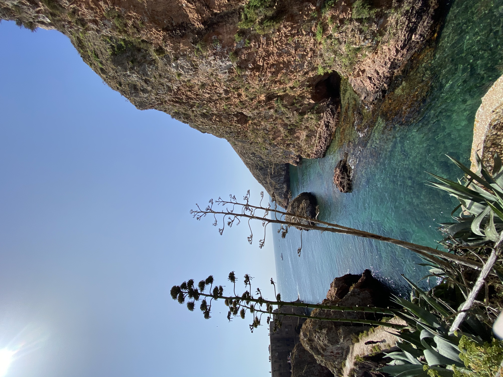
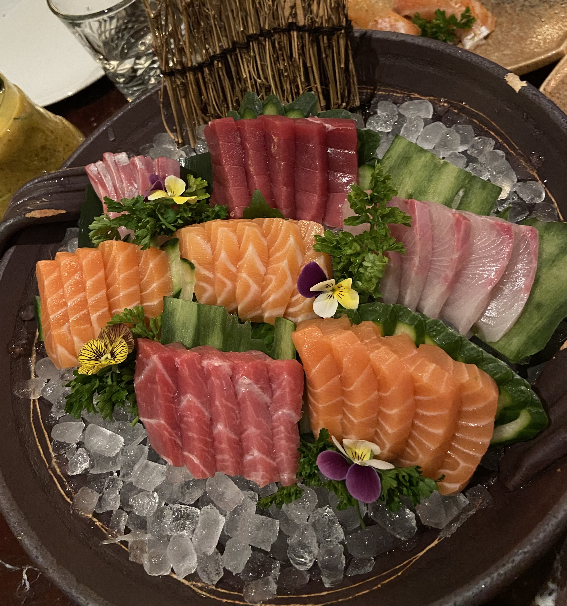

I love travel, dance and take pictures of landscapes, monuments, food and people. I am at the EMLV in my first year and I would like to orient myself towards the master international business 💸.
Discover EMLVI'm passionate about Travelling. This allows to discover new cultures and languages but also new landscapes. I visited several countries including : Spain, Portugal, Greece, Italy, Montenegro, Morocco.
I'm passionate about Dance. I have been practicing this sport for 13 years within the association les Baladines. Currently, I do modern jazz dance but I already did hip hop and zumba.
I'm passionate about Photos. Since the age of 12, taking pictures has become a kind of habit, it allows to immortalize moments and provokes emotions.  